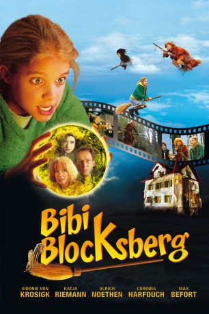

#5876 Bibi Blocksberg
 gesehen am 03.04.2017
gesehen am 03.04.2017
 
 IMDB-Wertung: 5.2 / 10
IMDB-Wertung: 5.2 / 10  Metascore: 0
Metascore: 0 
In Neustadt herrscht Jubelstimmung: Bibi Blocksberg hat durch eine spontane kleine Hexerei, mit der sie einen kräftigen Regenschauer auslöste, zwei Kinder vor dem sicheren Flammentod bewahrt. Während Mutter Barbara, selbst Hexe aus Fleisch und Blut, mächtig stolz auf ihre Tochter ist, hält der beruflich gestresste Papa Bernhard nur sehr wenig von Bibis übersinnlichen Eskapaden. Da erhält Bibi von Oberhexe Walpurgia die Nachricht, dass ihr aufgrund besonderer Verdienste bereits vorzeitig die “Kristallkugel”, die sie erst zur richtigen Hexe macht, verliehen wird. Voller Stolz fliegt Bibi mit ihrem Besen, der auf den Namen “Kartoffelbrei” hört, auf den Blocksberg. Doch die verschlagene Rabia eine der bösen Hexen, gönnt der Junghexe die hohe Ehre nicht. Noch am Blocksberg schwört sie erst zu ruhen, wenn sie Bibi die kostbare Kugel wieder abgejagt hat.
Jahr: 2002
Dauer: 98 Minuten
FSK: 0
Land: Deutschland Studio: Constantin FilmTonspuren:
Untertitel:
Auflösung: 720p (1280x720) Größe: 3481 MB
Genre: Komödie, Fantasy, Familie
Regisseur: Hermine Huntgeburth
Drehbuch: Sameer Asad Gardezi
Soundtrack:
Darsteller:
- Max Befort als Florian
 Katja Riemann als Barbara Blocksberg
Katja Riemann als Barbara Blocksberg Corinna Harfouch als Rabia
Corinna Harfouch als Rabia Ulrich Noethen als Bernhard Blocksberg
Ulrich Noethen als Bernhard Blocksberg Jeanette Hain als Annalena
Jeanette Hain als Annalena- François Goeske als Benny
- Sidonie von Krosigk als Bibi Blocksberg
- Inga Busch als Karla Kolumna
- Christian Nickel als Tom
- Monica Bleibtreu als Walpurgia
- Anja Sommavilla als Schubia
- Elea Geissler als Arkadia
- Kati Eyssen als Lalita
- Mareike Lindenmeyer als Edwina
- Eva Maria Bayerwaltes als Frau Müller-Riebensehl
- Billie Zöckler als Frau Hübner
- Alexander Held als Dr. Buttkock
- Edeltraud Schubert als Geriatria
- Susanne Czepl als Beisitzerin
- Barbara Bauer als Hexenwächterin
- Diana Pelzl als Hexenwächterin
- Bernd Krause als Buchhalter
- Theresa Vilsmaier als Marita
- Sophie Pflügler als Moni
- Ella Risin als Mädchen
- Marina Stölzl als Mädchen
- Roland Schreglmann als Junge
- Robin Schastok als Junge
Datei: X:\Kinder Collections\Bibi & Tina\Bibi Blocksberg (2002, FSK0, 1280x720).mkv seit 31.03.2017
Festplatte: Kinder-Filme+Trick
 Es gibt insgesamt 9 Filme in der Gruppe 'Kinder Collections\Bibi & Tina'
Es gibt insgesamt 9 Filme in der Gruppe 'Kinder Collections\Bibi & Tina'